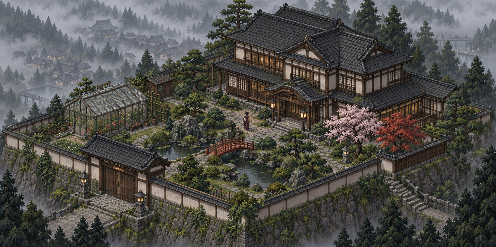
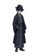
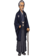

⌂
温室
⌂
主宅
⌁
庭院池塘

林澄 · 温室

顾远 · 北廊
千鹤 · 石桥
P
Possibility
雾岚庄园 · 正在生活
21:14
冬至前夜 · 1889
世界继续运行
＋
−
⌖
正在探索
返回全景
刚刚发生
21:14 · 温室
温室的灯灭了
林澄还不知道，顾远把一封信留在了北廊。
从这一刻探索另一种可能 →
观察
跟随居民
居民生活
探索另一种可能
雾岚庄园 · 冬至前夜 · 21:14
从这一刻，探索另一种可能
共同的过去会保留下来。你可以改变一件事，看看庄园接下来会走向哪里。
如果……
如果林澄先看见了顾远留在北廊的信？
留在这个世界
创造平行世界